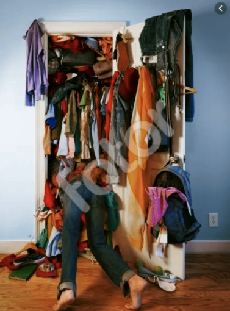
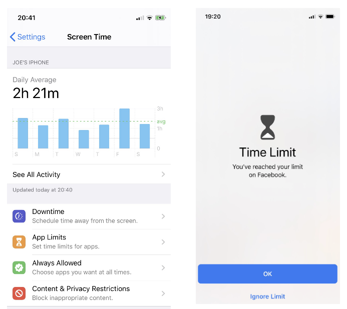

[啟發] 如何斷除壞習慣 | To Break Bad Habits
Blog URL: https://drive.mindmup.com/map/1IkHfIjj0-XzhLBl_TNJLgjMhtEwER7jY
Status: Published
text convert: https://drive.google.com/drive/folders/1qIKKayDH0S7G5dyX3-3ImW3WiqgrSKwH
生活中有許多的壞習慣，比說無限上綱的滑手機，看東森新聞XDD。但要如何讓壞習慣不可能發生？我從 <原子習慣> 得到的啟發，我們先看一個故事，1830年《鐘樓怪人》的作者雨果，他面臨一個不可能的截稿期限，他要在一年內完成作品。
為了對抗拖延的惡習，阻止娛樂活動，雨果想出一個怪招，他請助理把他所有的衣服都鎖進一個大櫃子裡，除了一條大披巾，他沒有東西可穿。既然沒有能穿出門的衣服，1830年未他就整整待在書房瘋狂寫作，結果大作《鐘樓怪人》就在1831年1月出版
有時候，成功的關鍵除了讓好習慣變得容易執行之外
更重要的是把壞習慣變困難。

這是行為改變第三法則的反轉：「試行動困難無比」。如果發現自己一直難以貫徹計畫，我們可以效法雨果，藉由創造心理學家所謂的「承諾機制」，增加壞習慣的難度。
承諾機制
當雨果把衣服都鎖起來，好讓自己專心寫作
就是創造了一個承諾機制，那什麼是？我們先談談定義
承諾機制是用當下做的選擇來控制未來的行為。這是鎖定未來行為，把你跟好習慣綁在一起，並讓你遠離惡習的一個方法。
生活中有很多方法可以創造承諾機制。你可以買獨立包裝而非家庭號的食物，來減低過度飲食的機率，出門時會刻意不帶錢包，以免被誘惑去買速食。
而承諾機制之所以有用
是因為它可以在你淪為誘惑的受者之前，好好利用良好的意圖
善用科技
讓好習慣自動化，並消除壞習慣，方法很多，通常都跟善用科技有關。因此承諾機制常搭配科技的輔助，比方說科技能讓原本困難、惱人與複雜的行動，變得輕鬆、無痛且簡單。
- 醫療：連續處方箋的藥可以自動續領
- 理財：透過自動提撥特定比例的薪資，來為退休生活存錢
- 用餐：送餐服務也可以幫你採購食材
- 生產力：可以用網站封鎖工具阻斷社群媒體的瀏覽
iPhone Screen Time 限制App使用
消除壞習慣，我自已也有一套方法，克制自已使用手機，比方說iPhone內建的 Screen Time功能，透過它我限制使用Line、Instagram、Facebook的使用間間，我設定為一天僅可以用45分鐘。對於筆電上的Line我則啟用自動鎖定模式，若三分鐘未使用就需要重新輸入一次密碼。
我還聽到更狠的是，透過插座定時器，裝在網路路由上，時間到就斷電，即是斷網路的概念，如果家有中有重點網路成隱的朋友，我是可以協助安裝XD

自動化的缺點
當然，科技的力量也可能對我們不利。瘋狂追劇之所以變成習慣，是因為比起繼續盯著螢幕，你要投注更多心力才能停止看劇要看下一集，你連按個鈕都不用！Netfix 或YouTube 會自動為你播放，你只要保持眼睛張開就可以了(你看看多自動化阿)。
科技帶來某種程度的方便，讓你可以滿足最微小的突發奇想與欲望。稍微覺得有點餓，就能把食物仙到家門口，或是稍微覺得有點無聊，就能迷航於廣闊的社群媒體之海。 當滿足欲望所需的努力基本上趨近於零，你會發現自己不知不覺陷入當下浮現的任何衝動。
自動化的缺點，就是可能會讓我們從一項簡單任務到另一項簡單任務
但我發現自己只要一有空閒，就會被社群媒體吸引，只要出現
毫秒的無聊就能讓我拿起手機。我們很容易把這些小小的分心美化成「休息一下」，但長久累積下來，會變成嚴重的問題。「只要再一分鐘」的心態一直摸著我，阻礙我去做任何重要的事。
大絕招，改密碼
再來是作者的親身經歷，寫這本書的那一年，試驗了一個時間管理策略：請他的助理每週一會改掉我所有社群媒體帳號的密碼，讓作者無法登入，於是呢整個期間，就能不受干擾地工作。
助理會在週五把新的密碼寄給作者，使其在週末盡情享用社群媒體，可到了週一，她會再次更改密碼。這個方法你也可以找個朋友或家人合作，每週為彼此重設密碼。
六年前，還是替代役的我，也迷上最火紅的英雄聯盟 | LOL，當然也是請女友(現任的老婆)幫我修改密碼，從此之就沒有登入過遊戲了，要斷絕壞習慣就要給一次痛快！
結論：
很多書本教你如何建立起好習慣，但好的書同時也不忘教你如何遠離壞習慣，因為我們不可永遠保持著正念，總要用些方法幫自已自然地遠離惡習。
科技為你所用時，自動化能讓好習慣變得無可避免，但科技也可能滋長壞習慣。了解壞習慣產生之前，早一步意識到它，這是鎖定未來行為，而不是依賴當下意志力的終極之道。
透過運用承諾機制、策略性的一次性選擇，你可以打造一個充滿必然性的環境，在這個空間裡，好習慣不再只是你希望的結果，而是幾乎保證會發生的結果。